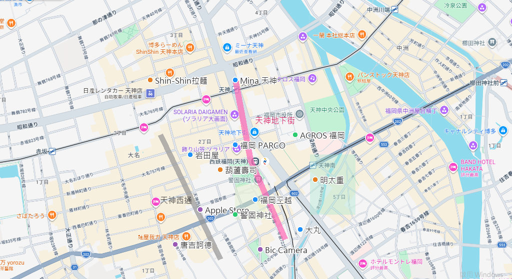
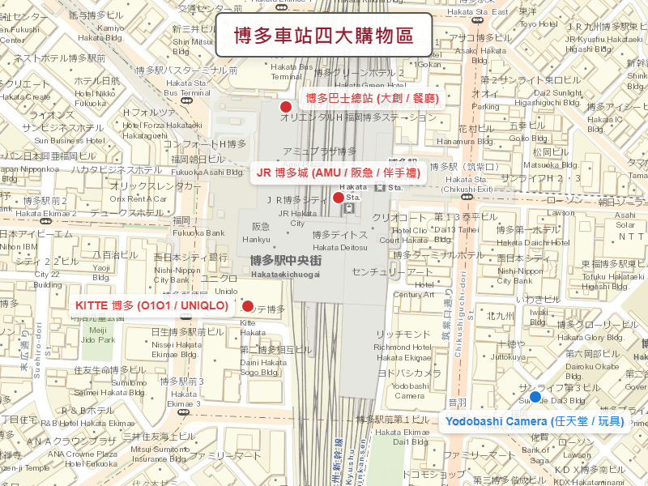

--
---
---
城市
✈️ 旅遊行程規劃
🗾 星悅航空早去晚回 · 別府 · 由布院 · 阿蘇 · 高千穗 · 熊本 · 福岡
別府 溫泉飯店（待填入）
9/26 ~ 9/28（2晚） • 待填預訂資料
南阿蘇 溫泉飯店/民宿（待填入）
9/28 ~ 9/30（2晚） • 待填預訂資料
熊本 飯店（待填入）
9/30 ~ 10/1（1晚） • 待填預訂資料
福岡/博多 飯店（待填入）
10/1 ~ 10/4（3晚） • 待填預訂資料
北九州機場取，福岡市區還（8-10人座）
Toyota Hiace / Grandace / Alphard / Vellfire 等車型
取車：9/26 07:30-08:00 @ 北九州機場租車櫃檯
還車：10/1 16:30 @ 福岡市區店還車（自駕6天）
特別注意：6人+6個大行李箱，必須預訂 8人座以上大車，行李才放得下。
第一天疲勞駕駛風險 ⚠️
搭乘 03:00 起飛的紅眼班機，代表前一晚幾乎沒有睡。06:20 降落後直接開 1.5 小時高速公路到別府，請副駕駛務必保持清醒協助導航，或中途於 SA 服務區休息補眠！
山路多且起霧風險（阿蘇、高千穗）
別府到阿蘇、高千穗段山路較多。秋季山區容易在午後或雨天起濃霧，請務必開啟霧燈並減速慢行，避免於天黑後行駛山路。
由布院 / 太宰府假日車位排隊
Day 2 是週日，由布院會非常擁擠！光是等車位可能就要排半小時以上。建議停在稍微遠離湯之坪街道的收費停車場，再步行過去更省時間。
♨️ 別府・由布院
地獄溫泉入浴劑（湯之花）、B-speak 蛋糕卷、柚子胡椒醬
⛰️ 阿蘇・高千穗
阿蘇牛奶布丁、高千穗神樂面具掛飾、神樂椎茸（香菇乾）
🐻 熊本
くまモン（熊本熊）周邊、辛子蓮藕真空包、陣太鼓甜點
🍜 福岡・小倉/門司港
一蘭拉麵泡麵版、辛子明太子、門司港燒咖哩調理包
| 地區 | 平均溫度 | 氣候特性 | 建議穿著 |
|---|---|---|---|
| 北九州/福岡 | 21-27°C | 初秋，平地舒適 | 短袖 + 薄外套備用 |
| 別府/由布院 | 17-24°C | 山區早晚溫差大 | 長袖襯衫 + 厚外套 |
| 阿蘇/高千穗 | 14-22°C | 高原風大，體感較冷 | 防風外套/輕便羽絨 |
| 🍂 提醒：高山區與峽谷早晚會降至 15°C 以下，保暖外套必帶！ | |||
勾選後系統會自動保存您的進度！
搶票時間與難度
天神是九州最大的購物商圈，因為「天神 Big Bang」都市更新計畫，這裡不僅有歷史悠久的高級百貨，還有近年全新改裝的超大型旗艦店！結合網路最新旅遊情報，幫您把天神商圈整理成「1 條地下動脈 ＋ 5 大主題區 ＋ 必吃美食與周邊景點」的究極攻略：
這是我為您生成的「可直接放上網頁」的靜態地圖圖片！
裡面已經幫您把「天神地下街（粉紅粗線）」、「天神西通（灰色粗線）」以及主要的「公園綠地範圍」全部標示出來，方便您一眼看出區域分布：

不管外面颳風下雨或是夏天超熱，天神地下街永遠是最佳的逛街起點！全長約 600 公尺（分為 1 號到 12 號街），採用 19 世紀歐洲風情的石疊街道與蔓草圖案天花板設計，直接連通周圍的各大百貨公司與地鐵站。
2023 年全新大改裝完畢，主打「超大型旗艦店」，想買日本國民品牌來這裡一棟就能搞定！
年輕人與動漫迷的聖地！分為本館與新館，地下室與天神地下街直通。
長輩最愛的區域，精品、化妝品與超強的「地下食品街 (デパ地下)」。
在百貨公司的西邊，是充滿個性的街邊店區域，有點類似台北東區或東京表參道/原宿。
* 1 號館：主打相機、手機、美容家電、Apple 產品。
* 2 號館：位於高架橋下，主打大型家電、遊戲機 (Nintendo Switch/PS5)、玩具、酒類與藥妝。
除了逛街，天神商圈也是福岡的美食一級戰區：
如果您與長輩同行，建議路線：
早上先去「警固神社」或「ACROS 福岡」走走 ➔ 從「天神地下街」平坦無障礙地散步並買個起司塔 ➔ 直通「大丸或岩田屋」吹冷氣看精品與伴手禮 ➔ 中午去吃「葫蘆壽司」或「極味屋」 ➔ 若年輕人想買衣服，再去「mina 天神」逛超大 UNIQLO ➔ 晚上再去「唐吉訶德」收尾！
博多車站簡直就是個巨大無比的購物迷宮，由好幾棟相連的百貨商場組成（統稱 JR Hakata City）！基本上您想買的伴手禮、動漫周邊、潮流服飾，這裡都可以一站解決。

博多車站非常大，通常是「白天去景點玩，晚上回飯店前順路在博多車站吃晚餐＋大採買」。建議可以先去 阪急 B1 / Ming 買完伴手禮提回飯店，晚上再去逛 Yodobashi 或 KITTE！